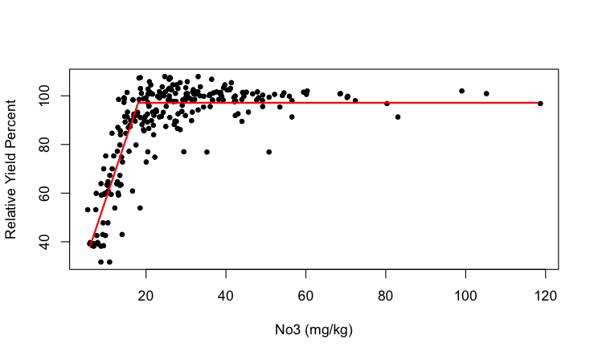

2 Statistical Models
2.1 What is in a Model?
The term model is pervasive in our field, and we likely come to this conversation with different notions of what constitutes a model. Before going any further in the discussion, let’s discuss the concept of a model in the context of data science.

From the 30,000 foot view a model is simply a mechanism to process some input and produce a corresponding output (Figure fig-simple-model).
The input to drive the model algorithm is almost always some form of data. The algorithm that processes the inputs can be based on data, but that is not necessarily so. Suppose the problem we are trying to solve is to ascertain an individuals annual federal income tax. The problem is solved with a model that takes as input the individuals financial situation. This information is typically known without error as information about income, property taxes, expenses, etc. is well documented. The algorithm processing this input is a translation of the relevant information in the federal income tax laws into machine instructions. The output is the amount of money owed to the government or expected as a refund.
Now suppose that for some reason the input data in the tax problem is not known without error. For example, income from tips, medical expenses or charitable contributions might be best guesses rather than exact amounts. Income data could be noisy because foreign income is converted at fluctuating exchange rates. If the input data is the realization of stochastic (random) influences, should we modify the algorithm?
When the input data to an algorithm is the result of observing random variation, we are looking to the algorithms of the model to find the signal in the data, to de-noise it. The signal located in the data is then transformed into the model output. Most models we build in data science are of this kind because the data we work with is inherently noisy. The reasons for the random variations are many: selecting observation from a larger population at random, applying treatments to randomly chosen experimental units, variations in measurement instruments and procedures, variations in the environment in which a phenomenon is observed, and so on.
The algorithms we use depend on the goals of the analysis, properties of the data, assumptions we are willing to make, attributes we look for in competitive models, and personal preferences.
Two Cultures
While everyone agrees that models in data science incorporate uncertainty, and that uncertainty is expressed in terms of randomly varying model elements, there is not agreement how to incorporate randomness into the model formulation and analysis. In an influential 2001 paper, “Statistical Modeling: The Two Cultures”, Leo Breiman contrasted two schools of thoughts: statistical (data) modeling and algorithmic modeling (Breiman 2001).
Statistical (data) modeling assumes that the data are generated by a stochastic data model. The model captures the essence of the random processes that gave the rise to the observed data. The data set at hand is one particular realization of those random processes. If the study were repeated, another data set would be realized, containing different numbers, but with the same stochastic properties. According to Breiman, 98% of statisticians subscribe to this approach.
Algorithmic modeling, on the other hand, makes no assumption about the underlying data model, treats the data mechanism as unknown, and is more common in fields outside of statistics. In Breiman’s words:
Perhaps the damaging consequence of the insistence on data models is that statisticians have ruled themselves out of some of the most interesting and challenging statistical problems that have arisen out of the rapidly increasing ability of computers to store and manipulate data. These problems are increasingly present in many fields, both scientific and commercial, and solutions are being found by nonstatisticians.
The goal of algorithmic models is more predictive accuracy than confirmatory inference and hypothesis testing. The model is supposed to approximate an unknown relationship between inputs and outputs well enough to provide satisfactory accuracy in predicting outputs of previously unseen inputs. Neural networks, decision trees, and support vector machines are examples of algorithmic tools that found rapid adoption outside of statistics. Machine learning as it emerged from computer science is a manifestation of algorithmic modeling.
In data modeling, theory focuses on the probabilistic properties of the model and of quantities derived from it. In algorithmic modeling, the focus is on the properties of the algorithm itself: starting values, optimization, convergence behavior, parallel execution, hyperparameter tuning, and so on.
Breiman’s article was widely discussed—the invited comments by leading statisticians at the end of the paper give a sample of opinions.
Both views, algorithmic and statistical, are correct and useful, and taking different views based on the situation does not cause cognitive dissonance. When we are working with large data sets, appealing to a random mechanism that generated the data is not necessarily straightforward (or meaningful):
How do we describe the mechanism that yields the web-scraped corpus of text on which large language models (LLMs) are trained?
What random elements are at work when you mine the database of customer interactions of a company? The database contains all transactions with all customers.
Is a sampling mechanism adequate to capture variability in images collected on the internet?
When we are concerned with apples randomly selected from randomly trees in an orchard, it is natural to consider the hierarchical sampling mechanism to model the between-tree and within-tree variability.
When a medical treatment and a placebo are assigned to two groups of randomly chosen subjects, we are
able to make causal statements about the treatment effects because other effects not accounted for are balanced out by the randomization. We will take full advantage of that probability mechanism in analyzing the experimental data.
Overall, our approach is a statistical modeling approach, models contain explicit random elements that allow us to study the statistical properties of quantities derived from the trained model and make uncertainty statements—under the assumption that the probabilistic assumptions made are justifiable.
George E.P. Box is credited with coining the much-used phrase “all models are wrong, but some are useful” (Box 1976). The phrase appears partially (“all models are wrong”) twice in his 1976 paper on Science and Statistics:
Since all models are wrong the scientist cannot obtain a “correct” one by excessive elaboration.
Since all models are wrong the scientist must be alert to what is importantly wrong.
The takeaway is that any model is an abstraction of a phenomenon and we strive to find a useful abstraction. The model does not attempt to reproduce the phenomenon. The tax algorithm converts the essence of the tax code into machine instructions, it is not an electronic copy of the entire law. The purpose is to accurately calculate an entity’s tax, anything else can be stripped away. An algorithm processing noisy data that reproduces the data is uninteresting. The goal is to abstract the data in such a way to allow separating the signal from the noise and to convert the signal into the desired output.
The first G.E.P. Box quote instructs us not to overdo it in building models; this translates to the problem of overfitting in data science, crafting a model that follows the training data too closely and as a result does not generalize well to new data points. If the goal is to predict, classify, or cluster the unseen then generalizability of the model is key. A model to forecast stock prices or trading volumes is judged by how well it can predict the future, not by how well it can predict the past. The adequate level of generalization for that model must be wrung from current and past stock prices. Finding the appropriate level of abstraction is resolved by striking the right balance in the bias-and-variance tradeoff (see sec-bias-variance).
The second G.E.P. Box quote instructs us that models are abstracting away features of the phenomenon. If these are important features, the model is not useful. In the best case this model does not meet its goal and is revised or abandoned. In the worst case the model can lead to bad decisions and harmful outcomes.
No matter how complex the model, we need to strive to understand how it works (interpret the model), not just what it does. If a model is not intrinsically interpretable then we need to strive to explain the forces that drive the model, keeping in mind that we are then making statements about the model and not about the underlying phenomenon we have abstracted.
Statistical Learning and Machine Learning
Much is being made of the difference between statistical models and machine learning models, or to be more precise, between statistical learning (SL) and machine learning (ML).
Definition: Statistical Learning
Statistical Learning is the process of understanding data through the application of tools that describe structure and relationships in data. Models are formulated based on the structure of data to predict outcomes from inputs, to test hypothesis about relationships, to group data, or to reduce the dimensionality of a problem.
Statistical learning emphasizes prediction more than the testing of hypothesis, as compared to statistical modeling. Many model classes used in statistical learning are the same models one uses to test hypothesis about patterns and relationships in data. Emphasis of prediction over hypothesis testing—or vice versa—flows from the nature of the problem we are trying to solve. The same model can be developed with focus on predictive capability or with focus on interpretability. We do not want to overdo the distinction between statistical learning and s tatistical modeling: statistical learning uses statistical models.
Learning is the process of converting experience into knowledge and machine learning is an automated way of learning by using computers. Rather than directly programming computers to perform a task, machine learning is used when the tasks are not easily described and communicated (e.g., driving, reading, image recognition) or when the tasks exceed human capabilities (e.g., analyzing large and complex data sets). Modern machine learning discovered data as a resource for learning and that is where statistical learning and machine learning meet.
SL and ML have more in common, than what separates them:
The input to a learning algorithm is data; the raw material is the same.
The data are thought of as randomly generated, there is some sense of variability in the data that is attributed to random sources.
Both disciplines distinguish supervised and unsupervised forms of learning
They use many of the same models and algorithms for regression, classification, clustering, dimension reduction, etc.
Machine learning uses observed data to describe relationships and “causes”; the emphasis is on predicting new and/or future outcomes. There is comparatively little emphasis on experimentation and hypothesis testing.
A key difference between SL and ML is what Breiman describes as the difference between data modeling and algorithmic modeling. The difference aligns closely with statistical and machine learning thinking. In data modeling, theory focuses on the probabilistic properties of the model and of quantities derived from it. In algorithmic modeling, the focus is on the properties of the algorithm itself. Consequently, statisticians are concerned with the asymptotic distributional behavior of estimators and methods as \(n \rightarrow \infty\). Machine learning focuses on finite sample properties and ask what accuracy can be expected based on the available data.
The strong assumptions statisticians make about the stochastic data-generating mechanism that produced the data set in hand as a realization are not found in machine learning. That does not mean that machine learning models are free of stochastic elements and assumptions—quite the contrary. It means that statisticians use the data-generating mechanism as the foundation for conclusions rather than the data alone.
When you look at a p-value in a table of parameter estimates, you rely on all assumptions about distributional properties of the data, correctness of the model, and (asymptotic) distributional behavior of the estimator. They flow explicitly from the data-generating mechanism or implicitly from somewhere else. Otherwise, the p-value does not make much sense. (Many argue that p-values are not very helpful and possibly even damaging to decision making but this is not the point of this discussion.)
If you express the relationship between a target variable \(Y\) and inputs \(x_1, \cdots, x_p\) as
\[ Y = f(x_1,\cdots,x_p) + \epsilon \]
where \(\epsilon\) is a random variable, it does not matter whether you perform data modeling or algorithmic modeling. We need to think about \(\epsilon\) and its properties. How does \(\epsilon\) affect the algorithm, the prediction accuracy, the uncertainty of statements about \(Y\) or \(f(x_1, \cdots, x_p)\)? That is why all data professionals need to understand about stochastic models and statistical models.
Stochastic and Statistical Models
Definition: Stochastic Model
A stochastic model describes the probability distribution of outcomes by allowing one or more of the model elements to be random variables.
Suppose we are charged with developing a model to predict recurrence of cancer. There are many possible aspects that influence the outcome:
- Age, gender
- Medical history
- Lifestyle factors (nutrition, exercise, smoking, …)
- Type of cancer
- Size of the largest tumor
- Site of cancer
- Time since diagnostic, time from treatment
- Type of treatment
- and so on
If we were to try and build a deterministic model that predicts cancer recurrence perfectly, all influences would have to be taken into account and their impact on the outcome would have to be incorporated correctly. That would be an incredibly complex model, and impractical.
By taking a stochastic approach we acknowledge that there are processes that affect the variability in cancer recurrence we observe from patient to patient. The modeling can now focus on the most important factors and how they drive cancer recurrence. The other factors are included through random effects. If the model captures the salient factors and their impact correctly, and the variability contributed by other factors is not too large, and not systematic, the model is very useful. It possibly is much more useful than an inscrutably complex model that tries to accommodate all influences perfectly.
The simplest stochastic model for cancer recurrence is to assume that the outcome is a Bernoulli (Binary) random variable taking on two states (cancer recurs, cancer does not recur) with probabilities \(\pi\) and \(1-\pi\). If we code the two states numerically, cancer recurs as 1, cancer does not recur as 0, the probability mass function of cancer recurrence is that of the random variable \(Y\),
\[ \Pr(Y=y) = \left \{ \begin{array}{cl} \pi & y=1 \\ 1-\pi & y = 0\end{array} \right . \]
Definition: Statistical Model
A statistical model is a stochastic model that contains unknown constants, called parameters. Parameters are estimated based on data. Parameters are constants, not random variables. The estimator of a parameter that depends on data is a random variable since the data are random.
The parameter in our cancer model is \(\pi\), the probability that \(Y\) takes on the value 1. In statistics, this probability is often called the “success” probability and its complement is called the “failure” probability. We prefer to call them the “event” and “non-event” probabilities instead. The event is the binary outcome coded as a 1.
Because we cannot visit with all cancer patients, a sample of patients is used to estimate \(\pi\). This process introduces uncertainty into the estimator of \(\pi\), a larger sample will lead to a more precise (a less uncertain) estimator.
The model is overly simplistic in that it captures all possible effects on cancer recurrence in the single quantity \(\pi\). Regardless of age, gender, type of cancer, etc., we would predict a randomly chosen cancer patient’s likelihood to experience a recurrence as \(\pi\). To incorporate input variables that affect the rate of recurrence we need to add structure to \(\pi\). A common approach in statistical learning and in machine learning is that inputs have a linear effect on a transformation of the probability \(\pi\):
\[ g(\pi) = \beta_0 + \beta_1 x_1+\cdots + \beta_p x_p \]
When \(g(\pi)\) is the logit function
\[\log\left \{ \frac{\pi}{1-\pi} \right\}\]
this is called a logistic regression model. \(x_1,\cdots,x_p\) are the inputs of the model, \(\beta_0, \cdots, \beta_p\) are the parameters of the model. \(\beta_0\) is the intercept, \(\beta_1, \cdots , \beta_p\) are the coefficients associated with the input variables. The logit transform maps the problem onto a scale where the effects of the inputs are linear. In other words, a unit change in \(x_j\) leads to a \(\beta_j\)-change in the logit of the event probability—it does not lead to a \(\beta_j\)-change in the event probability.
If we accept that the basic structure of the logistic model applies to the problem of predicting cancer occurrence, we use our sample of patient data to
estimate the parameters \(\beta_0, \cdots, \beta_p\);
determine which inputs and how many inputs are adequate: we need to determine \(p\) and the specific input variables;
determine whether the logit function is the appropriate transformation to linearity.
The effect of the inputs is called linear on \(g(\pi)\), if \(g(\pi)\) is a linear function of the parameters. To test whether this is the case, take derivatives of the function with respect to all parameters. If the derivatives do not depend on parameters, the effect is linear.
\[\begin{align*} \frac{\partial g(\pi)}{\partial\beta_{0}} &= 1 \\ \frac{\partial g(\pi)}{\partial\beta_{1}} &= x_{1}\\ \frac{\partial g(\pi)}{\partial\beta_{p}} &= x_{p} \end{align*}\]
None of the derivatives depends on any of the \((\beta_{0},\ldots,\beta_{p})\); \(g(\pi)\) is linear in the parameters. A non-linear function is non-linear in at least one parameter.
Example: Plateau (hockey stick) Model
A plateau model reaches a certain amount of output and remains flat afterwards. When the model prior to the plateau is a simple linear model, the plateau model is also called a hockey-stick model.

The point at which the plateau is reached is called a change point. Suppose the change point is denoted \(\alpha\). The hockey-stick model can be written as
\[ \text{E}\lbrack Y\rbrack = \left\{ \begin{matrix} \beta_{0} + \beta_{1}x & x \leq \alpha \\ \beta_{0} + \beta_{1}\alpha & x > \alpha \end{matrix} \right. \]
If \(\alpha\) is an unknown parameters that is estimated from the data, this is a non-linear model.
Model Types
Much of data science methodology is to select the right approach (algorithm) based on input data, learning methodology (supervised, unsupervised, semi-supervised, self-supervised) and analysis goal (prediction, recommendation, classification, clustering, dimension reduction, sequential decisioning), to train the model, and to deploy the model. Figure fig-proj-dsmodels is an attempt at structuring the input, algorithm, and output components of a model in the data science context. The diagram is complex and yet woefully incomplete and is intended to give you an idea of the diversity of methods and the many ways we can look at things. For example, in discussing input data we could highlight how data are stored, how fast it is moving, the degree to which the data is structured, the data types, and so forth. There are many other categorizations of data one could have listed.
The categorization of algorithms-—what many consider the models in the narrow sense—-leaves out semi-supervised learning, self-supervised learning, transfer learning, and other learning methods. Volumes of books and papers have been written about every item in the list of algorithms and many algorithms are represented by a simple description. Multilayer networks, for example, include artificial neural networks, deep networks such as convolutional and recurrent networks, and transformer architectures such as GPT.

It might seem like a daunting task to command the plethora of complexity displayed in the previous figure, understand all the pros and cons, grok the idiosyncrasies of software implementations, write code to train the model(s), communicate the results, and possibly implement a solution within a business context. That is what we are here for; let us get started.
2.2 Model Components
The expression for the logistic regression model
\[g(\pi) = \beta_0 + \beta_1 x_1 + \ldots + \beta_p x_p\]
looks quite different from the model introduced earlier,
\[Y = f\left( x_{1},\ldots,x_{p} \right) + \epsilon\]
Where is the connection?
The error term \(\epsilon\) is a random variable and we need to specify some of its distributional properties to make progress. At a minimum we provide the mean and variance of \(\epsilon\). If the model is correct—correct on average—then the error terms should have a mean of zero and not depend on any input variables (whether those in the model or other inputs). A common assumption is that the variance of the errors is a constant and not a function of other effects (fixed or random). The two assumptions are summarized as \(\epsilon \sim \left( 0,\sigma^{2} \right)\); read as \(\epsilon\) follows a distribution with mean 0 and variance \(\sigma^{2}\).
Mean function
Now we can take the expected value of the model and find that
\[ \text{E}\lbrack Y\rbrack = \text{E}\left\lbrack f\left( x_{1},\ldots,x_{p} \right) + \epsilon \right\rbrack = f\left( x_{1},\ldots,x_{p} \right) + \text{E}\lbrack\epsilon\rbrack = f\left( x_{1},\ldots,x_{p} \right) \]
Because the errors have zero mean and because the function \(f\left( x_1,\ldots, x_p \right)\) does not contain random variables, \(f\left( x_1,\ldots, x_p \right)\) is the expected value (mean) of \(Y\). \(f\left( x_1,\ldots,x_p \right)\) is thus called mean function of the model.
Example: Curvilinear models
Polynomial models such as a quadratic model \[Y = \beta_{0} + \beta_{1}x + \beta_{2}x^{2} + \epsilon\] or cubic model \[Y = \beta_{0} + \beta_{1}x + \beta_{2}x^{2} + \beta_{3}x^{3} + \epsilon\] have a curved appearance when \(Y\) is plotted against \(x\). They are linear models, however.
To test this, take derivatives of the mean function with respect to the parameters. For the quadratic model the partial derivatives with respect to \(\beta_{0}\), \(\beta_{1}\), and \(\beta_{2}\) are 1, \(x\), and \(x^{2}\), respectively. The model is linear in the parameters.
To emphasize that the models are not just straight lines in \(x\), a linear model with curved appearance is called curvilinear.
What does the mean function look like in the logistic regression model? The underlying random variable \(Y\) has a Bernoulli distribution. Its mean is
\[\text{E}\lbrack Y\rbrack = \sum y\, \Pr(Y = y) = 1 \times \pi + 0 \times (1 - \pi) = \pi\]
The logit function \[g(\pi) = \log \left\{ \frac{\pi}{1 - \pi} \right\}\] is invertible and the model \[g(\pi) = \beta_0 + \beta_1 x_{1} + \ldots + \beta_p x_p\]
can be written as
\[\text{E}\lbrack Y\rbrack = \pi = g^{- 1}\left( \beta_{0} + \beta_{1}x_{1} + \ldots + \beta_{p}x_{p} \right)\]
The mean function of the logistic model is also a function of the inputs. It is easy to show that if \(g(\pi)\) is the logit function the mean function is
\[\pi = \frac{1}{1 + \exp\left\{ - \beta_0 - \beta_1 x_1 - \cdots - \beta_p x_p \right\}}\] The logistic regression model is linear in the parameters on the logit scale (\(g(\pi)\)). It is a non-linear model on the probability scale; also called the response scale. Logistic regression models belong to a larger class of statistical models, the generalized linear models (GLM). The function that maps the mean of the data onto a scale where effects are linear is called the link function. It is thus common to refer to the link scale when interpreting the regression coefficients \(\beta_0, \cdots, \beta_p\) and the response scale when interpreting the mean of the data.
Systematic component
The mean functions \[f\left( x_{1},\ldots,x_{p} \right)\] and \[\frac{1}{1 + \exp\left\{ - \beta_{0} - \beta_{1}x_{1} - \ldots - \beta_p x_p \right\} }\] look rather different, except for the input variables \(x_{1},\ldots,x_{p}\).
For the model \(Y = f\left( x_{1},\ldots,x_{p} \right) + \epsilon\) we left it open how the mean function depends on parameters. There are three general approaches.
The systematic component has the form of a linear predictor, that is, a linear combination of the inputs. The linear predictor is frequently denoted as \(\eta\):
\[\eta = \beta_{0} + \beta_1 x_1 + \cdots + \beta_p x_p\]
The parameter \(\beta_0\) is called the intercept of the linear predictor. Although optional, it is included in most models to capture the effect on the mean if no input variables are present. Models with a linear predictor and an intercept have \(p + 1\) parameters in the mean function.
The logistic regression model also contains a linear predictor. Depending on whether you write the model in terms of \(g(\pi)\) or \(\pi\), the expressions are
\[g(\pi) = \eta\]
\[\pi = \frac{1}{1 + \exp\{ - \eta \}}\]
The mean function can be a general non-linear function of the parameters. The number of input variables and the number of parameters can be quite different.
The Mitscherlich model is popular in agricultural studies of plant growth as a function of an input such as a fertilizer. The plant species is a commercial crop. If \(Y\) denotes plant yield and \(x\) the amount of input, the Mitscherlich model is
\[Y = f(x,\xi,\lambda,\kappa) + \epsilon = \lambda + (\xi - \lambda)\exp\left\{ - \kappa x \right\} + \epsilon\]
The mean function \(f\)() depends on one input variable \(x\) and three parameters \((\xi,\lambda,\kappa)\). Taking derivatives, it is easily established that the mean function is non-linear. For example,
\[\frac{\partial f(x,\xi,\lambda,\kappa)}{\partial\xi} = \exp\{ - \kappa x \}\]
The derivative with respect to \(\xi\) depends on the \(\kappa\) parameter.
Non-linear models like the Mitscherlich equation are appealing because they are intrinsically interpretable. The parameters have meaning in terms of the subject domain:
\(\xi\) is the crop yield if no fertilizer is applied, the mean of \(Y\) at \(x = 0\). This is the baseline yield.
\(\lambda\) is the upper yield asymptote as \(x\) increases.
\(\kappa\) relates to a rate of change, how quickly the yield increases from \(\xi\) and reaches \(\kappa\).
Figure fig-mitscherlich shows the Mitscherlich model fitted to a set of plant yield data, the input variable is the nitrogen rate applied (in kg/ha). Visual estimates for the baseline yield and the asymptotic yield are \(\widehat{\xi} = 40\) and \(\widehat{\lambda} = 80\).

Interpretability of the parameters enables mapping of research questions to the model:
Is the asymptotic yield greater than 75?
This can be answered with a confidence interval for the estimate of \(\lambda\).At what level of \(x\) does yield achieve 75% of the maximum?
This is an inverse prediction problem. Set yield to 75% of \(\lambda\) and solve the model for \(x\).The rate of change in yield is less than ½ unit once \(x = 100\) are applied.
This can be answered with a hypothesis test for \(\kappa\).
The third method of specifying the systematic component is to not write it as a function of inputs and parameters. This is common for non-parametric methods such as smoothing splines, local regression, generalized additive models, and kernel methods. These models still have parameters, but the relationship between inputs and parameters is implied through the method of training the models.
The systematic component of a smoothing spline in one input variable, for example, can be written as
\[ f(x)= \sum_{m=1}^M \beta_m h_m(x) \]
where the \(h_m(x)\) functions are based on natural cubic splines, B-splines, or other spline expansions.
LOESS is a local polynomial regression method that fits a weighted model to data within a window. Data points near the center of the window receive more weight than data points further away. For example, a LOESS model of degree 2 fits a weighted quadratic polynomial model to the data captured in the window. Within window \(k\), the model takes the form
\[Y = \beta_{0k} + \beta_{1k}x + \beta_{2k}x^2 + \epsilon\]
As the window moves across the range of \(x\), different observations are captured in the window. The underlying model in each window is a quadratic polynomial but the values of the parameter estimates change from window to window. We do not write the systematic component of the model as a single function that applies to the entire range of \(x\).
Random component
The random components of a statistical model are the stochastic elements that describe the distribution of the target variable \(Y\). By now we are convinced that most data we work with are to some degree the result of random processes and that incorporating randomness into models makes sense. The model does not need to be correct for every observation, but it needs to be correct on average—an additive zero-mean random error is OK. Even if all influences on the output \(Y\) were known, it might be impossible to measure them, or to include them correctly into the model. Randomness is often introduced deliberately by sampling observations from a population or by randomly assigning treatments to experimental units. Finally, stochastic models are often simpler and easier to explain than other models. Among competing explanations, the simpler one wins (Occam’s Razor).
We have encountered so far two ways to reflect randomness in a statistical model:
By adding an additive error term to a mean function
By describing the distribution of the target variable
The Mitscherlich model is an example of the first type of specification:
\[Y = f(x,\xi,\lambda,\kappa) + \epsilon = \lambda + (\xi - \lambda)\exp\left\{ - \kappa x \right\} + \epsilon\]
Under the assumption that \(\epsilon \sim \left( 0,\sigma^{2} \right)\), it follows that \(Y\) is randomly distributed with mean \(f(x,\xi,\lambda,\kappa)\) and variance \(\sigma^{2}\); \(Y \sim \left( f(x,\xi,\lambda,\kappa),\sigma^{2} \right)\). If the model errors were normally distributed, \(\epsilon \sim N\left( 0,\sigma^{2} \right)\), then \(Y\) would also be normally distributed. Randomness is contagious.
The logistic regression model is an example of the second type of specification:
\[g\left( \text{E}\lbrack Y\rbrack \right) = \beta_{0} + \beta_{1}x_{1} + \ldots + \beta_{p}x_{p}\]
and \(Y\) follows a Bernoulli distribution.
It does not make sense to write the model with an additive error term unless the target variable is continuous.
Models can have more than one random element. In the cancer recurrence example, suppose we want to explicitly associate a random effect with each patient, \(b_{i} \sim \left( 0,\sigma_{b}^{2} \right)\), say. The modified model is now
\[g\left( \pi\ |\ b_{i} \right) = \beta_{0} + b_{i} + \ \beta_{1}x_{1} + \ldots + \beta_{p}x_{p}\]
Conditional on the patient-specific value of \(b_{i}\) the model is still a logistic model with intercept \(\beta_{0} + b_{i}\). Because the parameters \(\beta_{0},\ \cdots,\beta_{p}\) are constants (not random variables), they are also referred to as fixed effects. Models that contain both random and fixed effects are called mixed models.
Mixed models occur naturally when the sampling process is hierarchical.
For example, you select apples on trees in an orchard to study the growth of apples over time. You select at random 10 trees in the orchard and chose 25 apples at random on each tree. The apple diameters are then measured in two-week intervals. To represent this data structure, we need a few subscripts.
Let \(Y_{ijk}\) denote the apple diameter at the \(k\)th measurement of the \(j\)th apple from the \(i\)th tree. A possible decomposition of the variability of the \(Y_{ijk}\) could be
\[Y_{ijk} = \beta_{0} + a_{i} + \eta_{ijk} + \epsilon_{ijk}\]
where \(\beta_0\) is an overall (fixed) intercept, \(a_i \sim \left( 0,\sigma_{a}^{2} \right)\) is a random tree effect, \(\eta_{ijk}\) is an effect specific to apple and measurement time, and \(\epsilon_{ijk} \sim \left( 0,\sigma_{\epsilon}^{2} \right)\) are the model errors. This is a mixed model because we have multiple random effects (\(a_{i}\) and \(\epsilon_{ijk}\)). In addition, we need to decide how to parameterize \(\eta_{ijk}\). Suppose that a simple linear regression trend is reasonable for each apple over time. Estimating a separate slope and intercept for each of the 10 x 25 apples would result in a model with over 500 parameters. A more parsimonious parameterization is to assume that the apples share a tree-specific (fixed) intercept and slope and to model the apple-specific deviations from the tree-specific trends with random variables:
\[\eta_{ijk} = \left( \beta_{0i} + b_{0ij} \right) + {(\beta}_{1i} + b_{1ij})t_{ijk}\]
\(t_{ijk}\) is the time that a given apple on a tree is measured. The apple-specific intercept offsets from the tree-specific intercepts \(\beta_{0i}\) are model as random variables \(b_{0ij} \sim \left( 0,\sigma_{b_{0}}^{2} \right)\). Similarly, \(b_{1ij} \sim \left( 0,\sigma_{b_{1}}^{2} \right)\) models the apple-specific offset for the slopes as random variables. Putting everything together we obtain
\[Y_{ijk} = \beta_{0} + \left( \beta_{0i} + b_{0ij} \right) + {(\beta}_{1i} + b_{1ij})t_{ijk} + \epsilon_{ijk}\]
Note that \(a_{i}\) was no longer necessary in this model, that role is now played by \(\beta_{0i}\).
The total number of parameters in this model is 24 (1 overall intercept, 10 tree-specific intercepts, 10 tree-specific slopes, and 3 variances (\(\sigma_{\epsilon}^{2}, \sigma_{b_{0}}^{2}\), \(\sigma_{b_{1}}^{2}\)).
This is a relatively complex model and included here only to show how the sampling design can be incorporated into the model formulation to achieve interpretable and parsimonious models and how this naturally leads to multiple random effects.
A further refinement of this model is to recognize that the measurements over time for each apple are likely not independent. Furthermore, diameter measurements on the same apple close in time are more strongly correlated than measurements further apart. Incorporating this correlation structure into the models leads to a mixed model with correlated errors.
Response (Target) variable
A model has inputs that are processed by an algorithm to produce an output. When the output is a variable to be predicted, classified, or grouped, we refer to it with different—but interchangeable—names as the response variable, or the target variable, or the dependent variable. We are not particular about what you call the variable, as long as we agree on what we are talking about—the left-hand side of the model.
The target variable is a random variable and can be of different types. This matters greatly because we have to match distributional assumptions to the natural type of the target. Applying an analytic method designed for continuous variables that can take on infinitely many values to a binary variable that takes on two values is ill advised. However, it happens. A lot.
The first distinction is whether the target variable is continuous or discrete.
Continuous: the number of possible values of the variable is not countable. Typical examples are physical measurements such as weight, height, length, pressure, temperature. If the values of a variable are countable but the cardinality is high, applying methods for continuous data can make sense—for example, number of days since birth.
Discrete: the number of possible values is countable. Even if the number of possible values is infinite, the variable is still discrete. The number of fish caught per day does not have a theoretical upper limit, although it is highly unlikely that a weekend warrior will catch 1,000 fish. A commercial fishing vessel might.
Discrete variables are further divided into the following groups:
Count Variables: the values are true counts, obtained by enumeration. There are two types of counts:
Counts per unit: the count relates to a unit of measurement, e.g., the number of fish caught per day, the number of customer complaints per quarter, the number of chocolate chips per cookie, the number of cancer incidences per 100,000.
Proportions (Counts out of a total): the count can be converted to a proportion by dividing it with a maximum value. Examples are the number of heads out of 10 coin tosses, the number of larvae out of 20 succumbing to an insecticide,
Categorical Variables: the values consist of labels, even if numbers are used for labeling.
Nominal variables: The labels are unordered, for example the variable “fruit” takes on the values “apple”, “peach”, “tomato” (yes, tomatoes are fruit but do not belong in fruit salad).
Ordinal variables: the category labels can be arranged in a natural order in a lesser-greater sense. Examples are 1—5 star reviews or ratings of severity (“mild”, “modest”, “severe”).
Binary variables: take on exactly two values (dead/alive, Yes/No, 1/0, fraud/not fraud, diseased/not diseased)